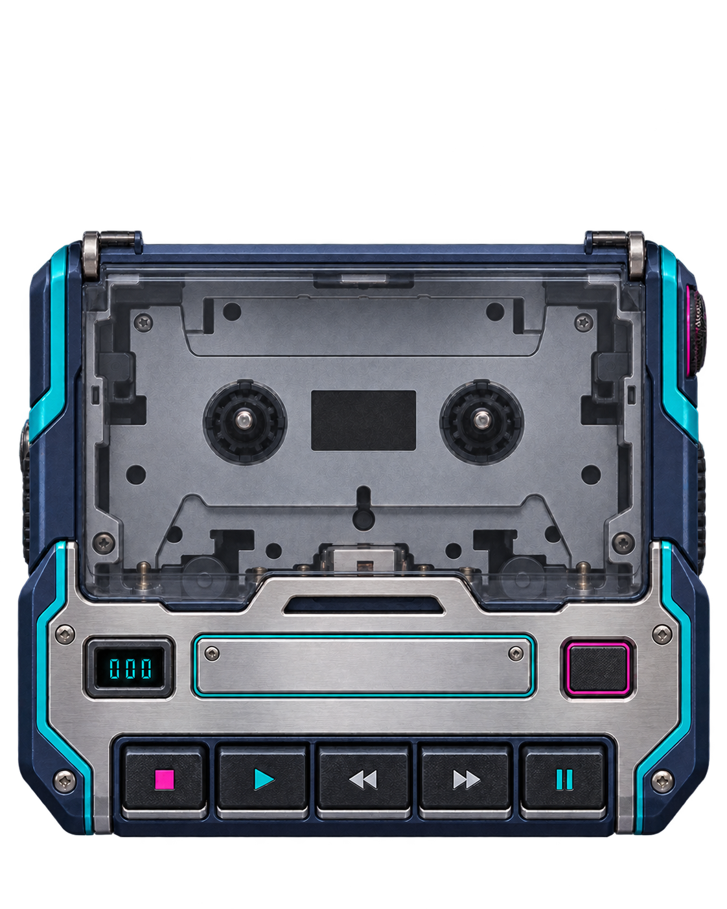
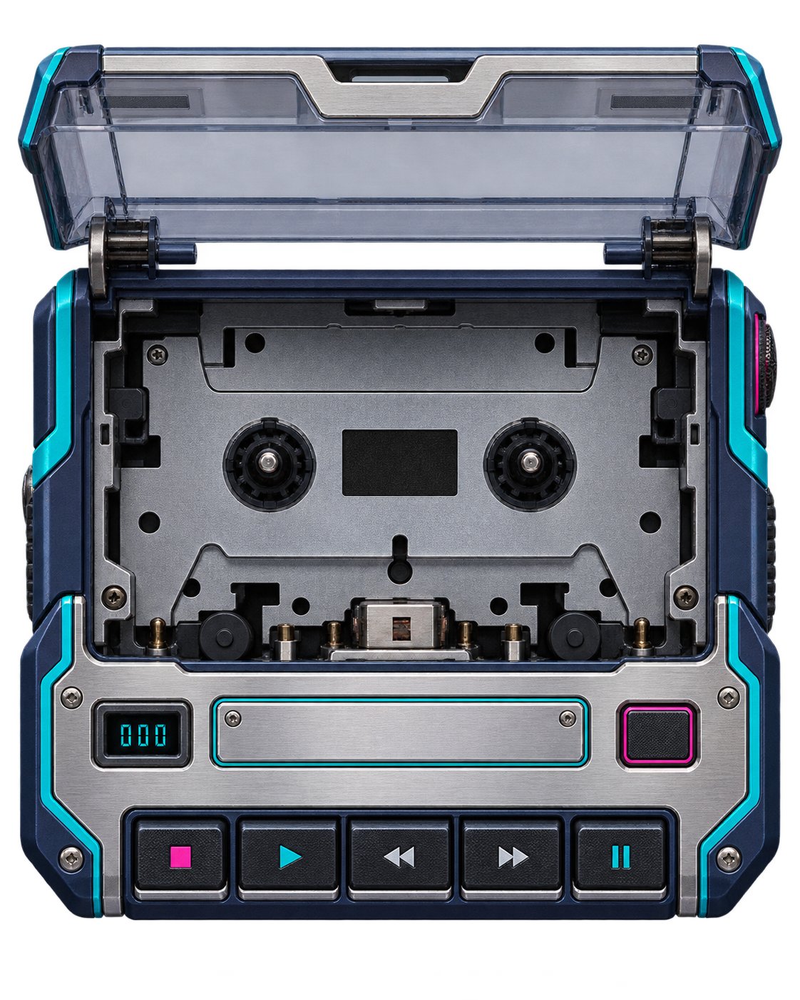

CHOISIS · ÉCOUTE · COLLECTIONNE — DES BANDES ORIGINALES DU JEU EN MP3


| ← ↑ ↓ → / ZQSD / WASD | Déplacer le vaisseau |
| Espace / Clic | Tir (maintien) |
| B / Maj / Ctrl au doigt : 2 doigts, double tap, ou bouton | Bombe intelligente (dégâts + efface les tirs) |
| Échap / P | Pause |
| M | Couper / remettre le son |
| Souris | Pilotage (option « visée souris » ou toucher) |
| X / W | Changer de set de tir (armes possédées) |
| F | Plein écran |
| À DEUX, SUR LE MÊME CLAVIER Joueur 1 : ←↑↓→ + Espace (tir) + B ou G (bombe). Joueur 2 : ZQSD / WASD + F ou L (tir) + G ou K (bombe). Manettes acceptées : la première pilote le joueur 1, la seconde le joueur 2. Scores, vies, bombes et puissance sont séparés ; les crédits et le réglage de l'arsenal restent communs. | |